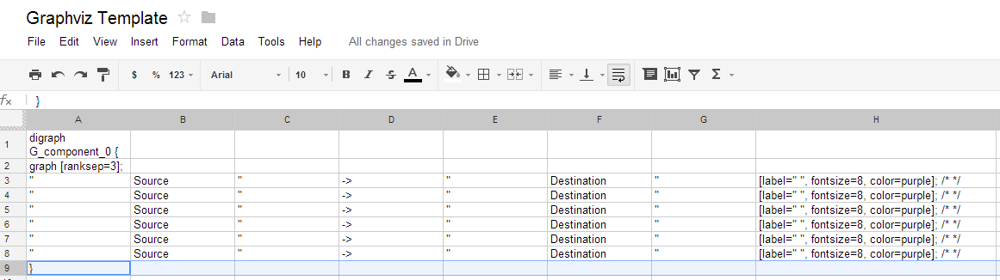

Please note the following Google Spreadsheet requirements:
- 1. First two lines must contain the graph attribites like:
- digraph G_component_0 {
- graph [ranksep=3 ,nodesep=3];
- 2. Be in the format with a comma indicating the next column:
- " , Source , " , -> , " , Destination, ", ;
- 3. Close with a bracket }

Home